In this document
The Android TV Input Framework (TIF) simplifies delivery of live content to Android TV. The Android TIF provides a standard API for manufacturers to create input modules for controlling Android TV, and enables live TV search and recommendations via metadata published by the TV Input.
The framework does not seek to implement TV standards or regional requirements, but does make it easier for device manufacturers to meet regional digital TV broadcast standards without re-implementation. Documentation in this section might also be useful to third-party app developers who want to create custom TV Inputs.
Components
The Android TV Input Framework implementation includes a TV Input Manager. The TIF works with the TV App, a system app that can’t be replaced by a third-party app, to access built-in and IP tuner channels. The TV App communicates with TV Input modules supplied by the device manufacturer or other parties through the TV Input Manager.
The TV Input Framework consists of:
- TV Provider (
com.android.providers.tv.TvProvider): a database of channels, programs, and associated permissions - TV App (
com.android.tv.TvActivity): the app that handles user interaction - TV Input Manager (
android.media.tv.TvInputManager): allows the TV Inputs to communicate with the TV App - TV Input: an app representing physical or virtual tuners and input ports
- TV Input HAL (
tv_inputmodule): a hardware definition that allows system TV Inputs to access TV-specific hardware when implemented - Parental Control: the technology to allow blocking of channels and programs
- HDMI-CEC: the technology to allow remote control of various devices over HDMI
These components are covered in detail below. See the following diagram for a detailed view of the Android TV Input Framework architecture.
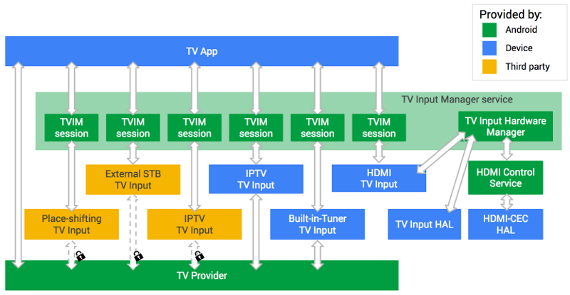Figure 1. Android TV Input Framework (TIF) architecture
Flow
Here is how the architecture is exercised:
- The user sees and interacts with the TV App, a system app that can’t be replaced by a third-party app.
- The TV App displays the AV content from the TV Input.
- The TV App cannot talk directly with the TV Inputs. The TV Input Manager identifies the state of TV Inputs for the TV App. See TV Input Manager below for more details about these limitations.
Permissions
- Only
signatureOrSystemTV Inputs and TV App have full access to the TV Provider database and are able to receive KeyEvents. - Only system TV Inputs can access the TV Input HAL through the TV Input Manager service. TV Inputs are accessed one-to-one via TV Input Manager sessions.
- Third-party TV Inputs have package-locked access to the TV Provider database and can READ/WRITE only to matching package rows.
- Third-party TV inputs can either display their own content or content from a device manufacturer’s passthrough TV inputs, like HDMI1. They can’t display content from non-passthrough TV inputs, like a built-in or IPTV tuner.
TV_INPUT_HARDWAREpermission for a hardware TV Input app, signals the TV Input Manager Service to notify the TV Input service on boot to call the TV Input Manager Service and add its TV Inputs. This permission allows a hardware TV Input app to support multiple TV Inputs per TV Input service, as well as being able to dynamically add and remove its supported TV Inputs.
TV Provider
The TV Provider database stores the channels and programs from TV Inputs. The TV Provider also publishes and manages the associated permissions so that TV Inputs can see only their own records. For instance, a specific TV Input can see only the channels and programs it has supplied and is prohibited from accessing any other TV Inputs’ channels and programs.
The TV Provider maps "broadcast genre" to "canonical genre" internally. TV
Inputs are responsible for populating "broadcast genre" with the value in the
underlying broadcast standard, and the "canonical genre" field will
automatically be populated with the correct associated genre from android.provider.TvContract.Genres. For example, with broadcast standard ATSC A/65 and program with genre 0x25
(meaning “Sports”), the TV Input will populate the “broadcast genre” with the
String “Sports” and TV Provider will populate the “canonical genre” field with
the mapped value android.provider.TvContract.Genres.SPORTS.
See the diagram below for a detailed view of the TV Provider.
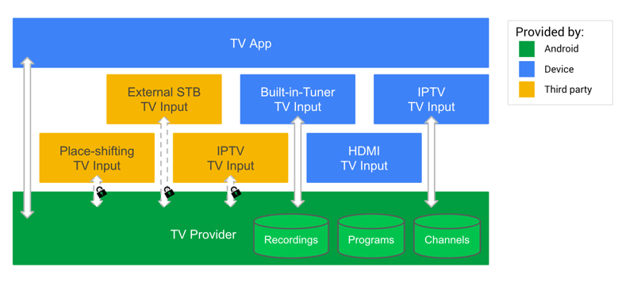Figure 2. Android TV Provider
Only apps in the privileged system partition can read the entire TV Provider database.
Passthrough TV inputs do not store channels and programs.
In addition to the standard fields for channels and programs, the TV Provider
database also offers a BLOB type field, COLUMN_INTERNAL_PROVIDER_DATA, in each table that TV Inputs may use to store arbitrary data. That BLOB data
can include custom information, such as frequency of the associated tuner, and
may be provided in a protocol buffer or another form. A Searchable field is
available to make certain channels unavailable in search (such as to meet
country-specific requirements for content protection).
Database field examples
The TV Provider supports structured data in channel (android.provider.TvContract.Channels) and program (android.provider.TvContract.Programs) tables. These tables are populated and accessed by TV Inputs and system apps
like the TV App. These tables have four types of fields:
- Display: Display fields contain information that apps may want to make visible to the
user, like a channel’s name (
COLUMN_DISPLAY_NAME) or number (COLUMN_DISPLAY_NUMBER), or the title of the program being viewed. - Metadata: There are three fields for identifying content, according to relevant
standards, like a channel’s transport stream ID (
COLUMN_TRANSPORT_STREAM_ID), original network ID (COLUMN_ORIGINAL_NETWORK_ID) and service id (COLUMN_SERVICE_ID). - Internal data: Fields that are for the custom use of TV Inputs.
Some fields, likeCOLUMN_INTERNAL_PROVIDER_DATA, are customizable BLOB fields where a TV Input can store arbitrary metadata about their channel or program. - Flag: Flag fields represent whether a channel should be restricted from search,
browse, or viewing. This can be set only at the channel level. All programs
defer to the setting on the channel.
COLUMN_SEARCHABLE: Restricting search from some channels may be a requirement in certain regions.COLUMN_SEARCHABLE = 0means the channel should not be exposed in search results.COLUMN_BROWSABLE: Visible to system applications only. Restricting channel from being browsed by applications.COLUMN_BROWSABLE = 0means the channel should not be included in the channel list.COLUMN_LOCKED: Visible to system applications only. Restricting channel from being viewed by invalid accounts without entering PIN code.COLUMN_LOCKED = 1means the channel should be protected by parental control.
For a more exhaustive list of the fields, see android/frameworks/base/media/java/android/media/tv/TvContract.java
Permissions and access control
All fields are visible to anyone with access to the corresponding row. No fields are directly accessible to users; they see only what the TV App, System apps, or TV Inputs surface.
- Each row has
PACKAGE_NAME, the package (app) that owns that row, checked on Query, Insert, Update via TvProvider.java. A TV Input may access only the information it wrote and is cordoned off from the information provided by other TV Inputs. - READ, WRITE permissions via AndroidManifest.xml (requires user consent) to determine available channels.
- Only
signatureOrSystemapps can acquireACCESS_ALL_EPG_DATApermission to access the entire database.
TV Input Manager
The TV Input Manager provides a central system API to the overall Android TV Input Framework. It arbitrates interaction between apps and TV Inputs and provides parental control functionality. TV Input Manager sessions must be created one-to-one with TV Inputs. The TV Input Manager allows access to installed TV Inputs so apps may:
- List TV inputs and check their status
- Create sessions and manage listeners
For sessions, a TV Input may be tuned by the TV App only to URIs it has added
to the TV Provider database, except for passthrough TV Inputs which can be
tuned to using TvContract.buildChannelUriForPassthroughInput(). A TV Input may also have its volume set. TV Inputs provided and signed by the
device manufacturer (signature apps) or other apps installed in the system
partition will have access to the entire TV Provider database. This access can
be used to construct apps to browse and search across all available TV channels
and programs.
An app may create and register a TvInputCallback with the android.media.tv.TvInputManager to be called back on a TV Input’s state change or on the addition or removal
of a TV Input. For example, a TV App can react when a TV Input is disconnected
by displaying it as disconnected and preventing its selection.
The TV Input Manager abstracts communication between the TV App and TV Inputs. The standard interface of TV Input Manager and TV Input allows multiple device manufacturers to create their own TV Apps while helping all third-party TV Inputs work on all TV Apps.
TV Inputs
TV Inputs are Android apps in the sense they have an AndroidManifest.xml and are installed (via Play, pre-installed, or sideloaded). Android TV supports pre-installed system apps, apps signed by the device manufacturer and third-party TV Inputs.
Some inputs, like the HDMI input or built-in tuner input, can be provided only by the manufacturer as they speak directly with the underlying hardware. Others, such as IPTV, place-shifting, and external STB, can be supplied by third parties as APKs on Google Play Store. Once downloaded and installed, the new input can be selected within the TV App.
Passthrough input example
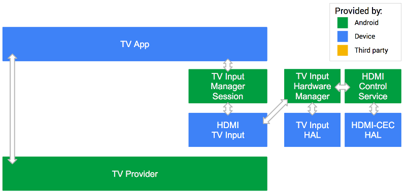Figure 3. Android TV System Input
In this example, the TV Input provided by the device manufacturer is trusted
and has full access to the TV Provider. As a passthrough TV Input, it does not
register any channels or programs with the TV Provider. To obtain the URI used
to reference the passthrough input, use the android.media.tv.TvContract utility method buildChannelUriForPassthroughInput(String inputId). The TV App communicates with the TV Input Manager to reach the HDMI TV
Input.
Built-in tuner example
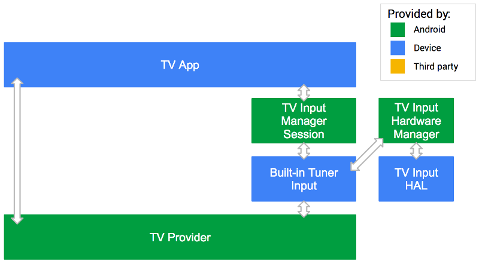Figure 4. Android TV Built-in Tuner Input
In this example, the Built-in Tuner TV Input provided by the device manufacturer is trusted and has full access to the TV Provider.
Third-party input example
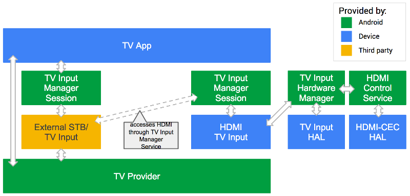Figure 5. Android TV third-party input
In this example, the external STB TV Input is provided by a third party. Since that TV Input can’t directly access the HDMI video feed coming in, it must go through the TV Input Manager and use the HDMI TV Input provided by the device manufacture.
Through the TV Input Manager, the external STB TV Input can speak with the HDMI TV Input and ask it to show the video on HDMI1. So the STB TV Input can control the TV while the manufacturer-provided HDMI TV Input renders the video.
Picture in picture (PIP) example
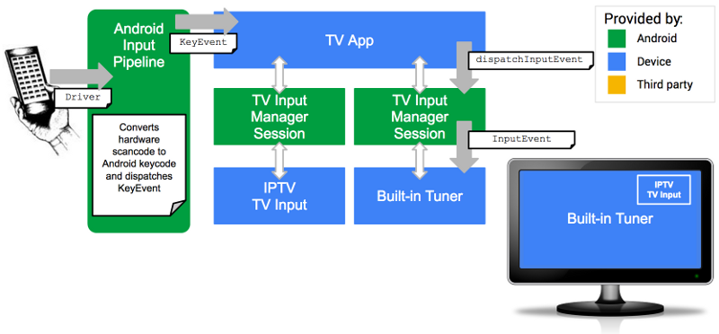Figure 6. Android TV KeyEvents
The diagram above shows how buttons on a remote control are passed to a
specific TV Input for picture in picture (PIP) display. Those button presses
are interpreted by the hardware driver supplied by the device manufacturer,
converting hardware scancodes to Android keycodes and passing them to the
standard Android input pipeline InputReader and InputDispatcher functions as KeyEvents. These in turn trigger events on the TV App if it is in focus.
Only system TV Inputs are eligible to receive InputEvents, and only if they have the RECEIVE_INPUT_EVENT system permission. The TV Input is responsible to determine which InputEvents
to consume and should allow the TV App to handle the keys it does not need to
consume.
The TV App is responsible for knowing which system TV Input is active, meaning
selected by the user, and to disambiguate incoming KeyEvents and route them to the correct TV Input Manager session, calling dispatchInputEvent() to pass on the event to the associated TV Input.
MHEG-5 input example
The following diagram shows a more detailed view of how KeyEvents are routed through the Android TIF.
Figure 7. Android TV Red button example
It depicts the flow of a Red button app, common in Europe for letting users access interactive apps on their televisions. An app can be delivered over this transport stream. When the button is clicked, it lets users interact with these broadcast apps. For example, you might use these broadcast apps to access related web pages or sports scores.
See the Broadcast app section to learn how broadcast apps interact with the TV App.
In this example:
- The TV App is in focus and receives all keys.
KeyEvents(e.g. the Red button) is passed to the active TV Input asInputEvents.- The system TV Input integrates with MHEG-5 stack and has the
RECEIVE_INPUT_EVENTsystem permission. - On receiving activation keycode (e.g. Red button), the TV Input activates broadcast app.
- TV input consumes
KeyEventsasInputEventsand the broadcast app is the focus and handlesInputEventsuntil dismissed.
Note: Third-party TV inputs never receive keys.
TV Input HAL
The TV Input HAL aids development of TV Inputs to access TV-specific hardware.
As with other Android HALs, the TV Input HAL (tv_input) is
available in the AOSP source tree and the vendor develops its implementation.
TV App
The system TV App presents live TV content to the user. A reference TV App (Live TV) is provided alongside the Android platform, which can be used as-is, customized, extended, or replaced by device manufacturers. The source code is available in the Android Open Source Project, and you can get started with it in the Reference TV app article.
Device manufacturers may extend their TV Apps to implement device manufacturer or country-specific features, however this is not in the scope of TIF or the reference TV App.
At a minimum, the system TV App needs to handle the following tasks:
Setup and configuration
- Auto-detect TV Inputs
- Let TV Inputs initiate channel setup
- Control parental settings
- Edit channels
Viewing
- Access and navigate all TV channels
- Access TV program information bar
- Display Electronic Programming Guide (EPG) data
- Support multiple audio and subtitle tracks
- Supply parental control PIN challenge
- Allow TV Input UI overlay for:
- TV standard (HbbTV, etc.)
- Populate search results for TV channels and programs
- Display app linking cards
- Support timeshifting APIs
- Handle DVR functionality and support TV recording APIs
This feature set will increase in line with new Android versions where the platform TIF APIs are extended. CTS Verifier provides the compatibility test coverage.
Support for third-party TV Inputs
Android TV provides developer APIs for third-party TV inputs, enabling installed apps to deliver software channels into the live TV experience. To ensure a compatible Android device implementation, the system TV App has some responsibilities regarding surfacing third-party TV inputs and channels to the user. The reference Live TV app provides a compatible implementation; if replacing the system TV App, device manufacturers must ensure their own apps provide similar compatibility, to meet developer expectations across all Android TV devices.
The system TV App must surface third-party inputs alongside the device's default live TV service. The promise of the developer APIs is that users will be able to find channels (once installed) within their standard TV experience.
Visual differentiation between built-in channels and third-party channels is allowed, as defined in the TV App section of the Android CDD.
The following sections show how the Live TV application fulfills the CDD requirements.
New channel setup
The addition of new third-party inputs/channels begins with the user finding and installing a TV Input from an application store, such as Google Play.
Some third-party TV inputs automatically add channels to the TvProvider database. However most will provide a Setup activity to enable the user to set up their channels, provide login details, and other actions. The system TV App needs to ensure the user can activate this Setup activity, which is why the CDD requires third-party inputs be minimal navigation actions away from the main TV App.
The reference Live TV app provides the Channel Sources menu for accessing inputs.

Figure 8. Go to Settings.
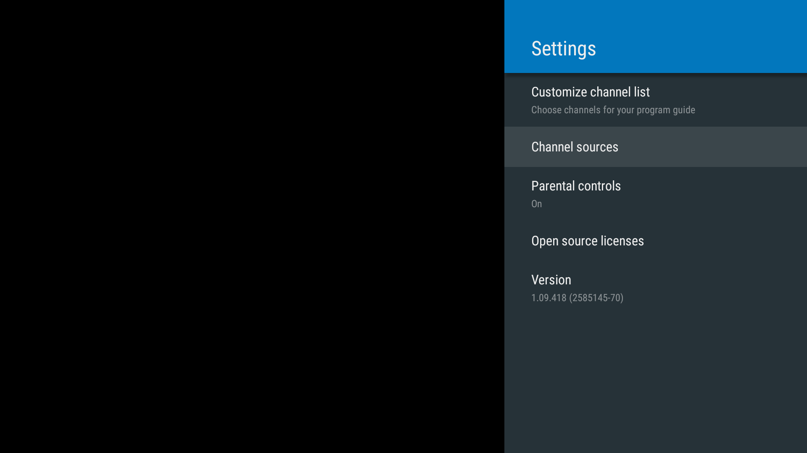Figure 9. Go to Channel sources in Settings.
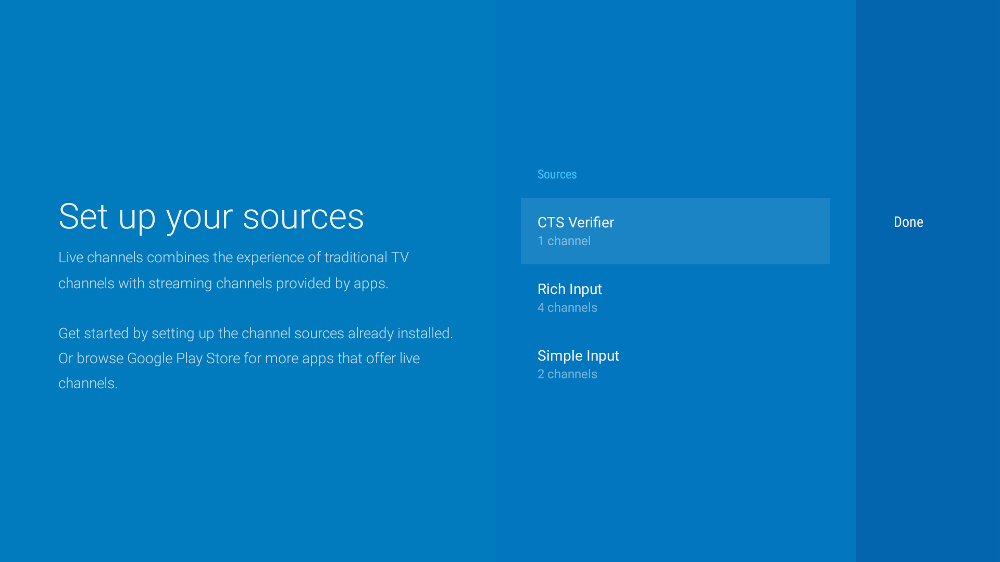Figure 10. Select your source from the list.
Figure 11. Add channels from your source
In addition a notification card is shown at the top of the TV App menu after a new TvInput is installed, to take the user directly to the Setup:
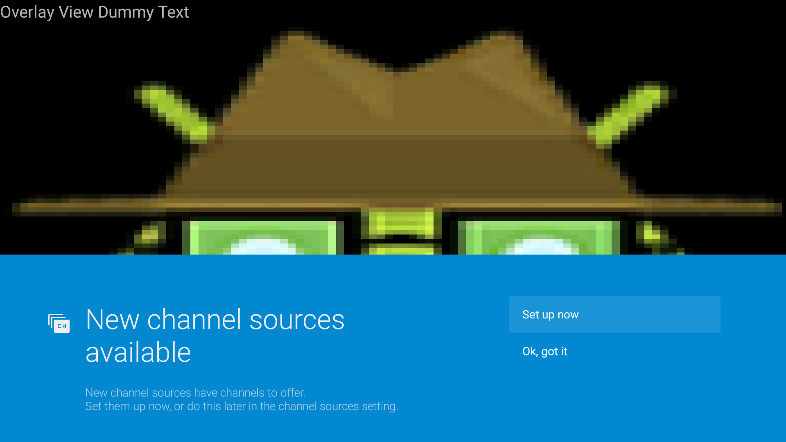Figure 12. Notification that shows new channel sources are available.
If the user takes action through the notification, they can select to set up their sources as seen in Figure 10.
See Define Your TV Input Service for developer expectations in this area.
Customize the channel list
Device manufacturers may provide a UI to hide certain channels and enable users to manage their own EPGs. Live TV includes this facility.
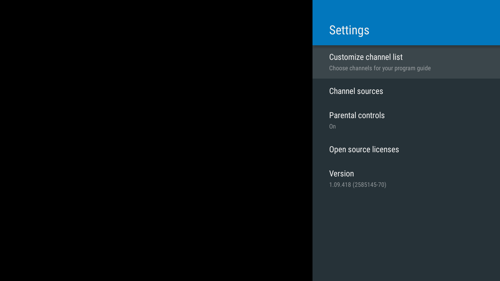Figure 13. Open the channel list in Settings.
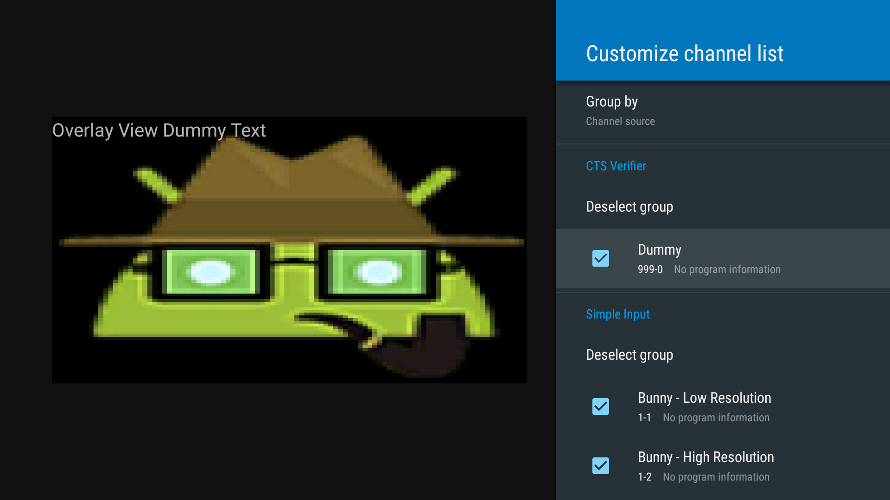Figure 14. Customize your channel list.
EPG
Third-party input developers need to have confidence that users can easily navigate to their channels during general usage, across all compatible Android TV devices.
Channels from third-party inputs must be presented as part of the device's standard live TV experience EPG. Visual separation or separate categories for third-party channels can be used (see the TV App section of the Android CDD)—what's key is that users are able to find the channels they have installed.
Search
Manufacturers must implement the TV App to include search results for global search requests in order to ensure the best user experience. Live TV provides an implementation (see com.android.tv.search.TvProviderSearch) which provides results from third-party inputs (required for platform compatibility) as well as built-in inputs.
Time shifting
For devices on Android 6.0 and above, the TV App must support the Android framework time shifting APIs. Additionally, manufacturers must implement playback controls in the TV App, which allow users to pause, resume, rewind, and fast forward the playback.
For TV Inputs that support time shifting, the TV App needs to display playback controls.
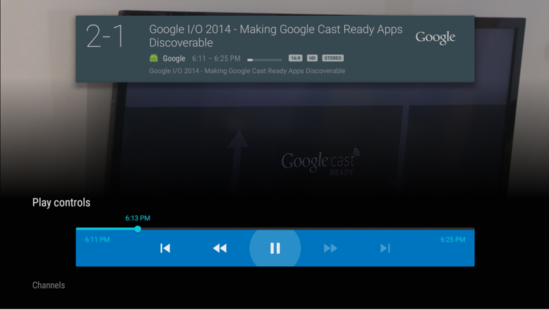
Figure 15. Playback controls
DVR
For devices on Android 7.0 and above, the TV App must support the Android framework TV recording APIs, to support, list, and play recorded programs.
This allows device manufacturers to plug their DVR subsystems into TIF and dramatically reduce the integration effort it takes to enable or integrate DVR functionality on a TV device. It also enables third parties to provide aftermarket DVR systems that can be plugged into an Android TV device.
In addition to recording live content, the TV App also handles resource conflict. For example, if the device has two tuners, it can record two programs at the same time. If the user asks to record three, the TV App must handle the conflict and should either surface a notification or request that the user schedules a priority for these requests.
TV Apps can also implement more sophisticated logic like asking a user if they’d like to record all future episodes in a series when they request to record one episode.
See the following diagram for a view into a possible DVR implementation in Android TV.
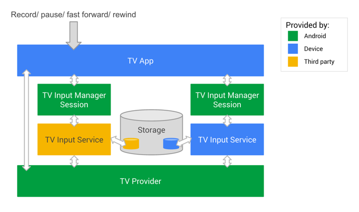
Figure 16. Digital video recording in Android TV
- The TV Input Service tells the TV App how many tuners are available so that the TV App can handle possible resource conflict.
- The TV App receives a user-initiated request to record a TV program.
- The TV App stores the recording schedule in its internal database.
- When it’s time to record, the TV App passes a request to tune to the channel associated with the recording.
- The TV Input Service receives this request, responds with whether or not there are appropriate resources, and tunes to the channel.
- Then the TV App passes a request to start recording to the TV Input Manger.
- The TV Input Service receives this request and starts recording.
- The TV Input Service stores the actual video data in its storage, which can be external storage or cloud storage.
- When it's time to finish the recording, the TV App passes the stop recording request to the TV Input Manager.
- Once the TV Input Service receives the request, it stops the recording and adds its associated metadata to the TV Provider so that the TV App can show the recording to users when requested.
For more information about implementing Recording features in your TV Input service, see this TV Recording article.
Useful resources
- The Android CDD and documented developer APIs are the definitive references.
- CTS Verifier exercises the APIs as part of the compatibility testing program. Running this against Live TV may be a useful way to see the EPG, Search, Parental Control, and other requirements in the context of third-party inputs.
- See Define Your TV Input Service for developer expectations in this area.
Parental Control
Parental control lets a user block undesired channels and programs, but bypass the block by entering a PIN code.
Responsibility for parental control functionality is shared amongst the TV App, TV Input Manager service, TV Provider, and TV Input.
Parental control is mandatory, and is covered by CTS Verifier.
A number of countries have defined rating systems that TV Inputs can use via the TVContentRating API. Additionally, TV Inputs can register their own custom rating systems as demonstrated by the CTS Verifier test, which introduces a 'fake' rating. For countries where a standard rating system exists, device manufacturers are encouraged to combine the TV Input Framework Parental Control with any other mechanisms they may include.
TV Provider
Each channel row has a COLUMN_LOCKED field that is used to lock
specific channels from viewing without entering a PIN code. The program field
COLUMN_CONTENT_RATING is intended for display and is not used to
enforce parental control.
TV Input Manager
The TV Input Manager stores every blocked TvContentRating and
responds to isRatingBlocked() to advise if content with the given
rating should be blocked.
TV Input
The TV Input checks if the current content should be blocked by calling
isRatingBlocked() on the TV Input Manager when the rating of the
displayed content has changed
(on program or channel change), or parental control settings have changed (on
ACTION_BLOCKED_RATINGS_CHANGED and
ACTION_PARENTAL_CONTROLS_ENABLED_CHANGED). If the content should
be blocked, the TV Input disables the audio and video
and notifies the TV app that the current content is blocked by calling
notifyContentBlocked(TvContentRating). If the content should not
be blocked, the TV Input enables audio and video and notifies the TV App
the current content is allowed by calling notifyContentAllowed().
TV App
To honor the parental control APIs, and therefore create a compatible platform, the system TV App needs to provide a way for users to manage parental control, including for any custom ratings registered by specific apps.
The TV App shows a PIN code UI when it is notified by a TV Input that the current content is blocked or when the user attempts to view a blocked channel.
The TV App does not directly store the parental control settings. When the user
changes the parental control settings, every blocked
TvContentRating is stored by the TV Input Manager, and blocked
channels are stored by the TV Provider.
The TV App needs to declare the permission
android.permission.MODIFY_PARENTAL_CONTROLS in order to change
the parental control settings.
Device manufacturers are encouraged to:
- Exercise the CTS Verifier parental controls test against the reference Live TV application for a demonstration of the compatibility requirements.
- Use the Live TV app as reference for their own TV App: in particular see the ContentRatingsManager and RatingSystemsFragment source, and how they handle custom ratings.
HDMI-CEC
HDMI-CEC allows one device to control another, thereby enabling a single remote to control multiple appliances in a home theater. It is used by Android TV to speed setup and allow distant control over various TV Inputs via the central TV App. For instance, it may switch inputs, power up or down devices, and more.
The Android TIF implements HDMI-CEC as the HDMI Control Service so that device manufacturers merely need to develop low-level drivers that interact with the lightweight Android TV HAL, skipping more complex business logic. In providing a standard implementation, Android seeks to mitigate compatibility issues by reducing fragmented implementations and selective feature support. The HDMI Control Service uses the existing Android services, including input and power.
This means existing HDMI-CEC implementations will need to be redesigned to interoperate with the Android TIF. We recommend the hardware platform contain a microprocessor to receive CEC power on and other commands.
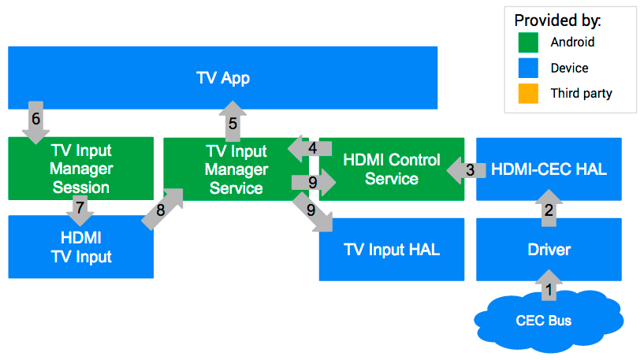Figure 17. CEC integration on Android TV
- The CEC bus receives a command from the currently active source to switch to a different source.
- The driver passes the command to the HDMI-CEC HAL.
- The HAL notifies all
ActiveSourceChangeListeners. - THe HDMI Control Service is notified of source change via
ActiveSourceChangeListener. - The TV Input Manager service generates an intent for the TV App to switch the source.
- The TV App then creates a TV Input Manager Session for the TV Input being
switched to and calls
setMainon that session. - The TV Input Manager Session passes this information on to the HDMI TV Input.
- The HDMI TV input requests to set sideband surface.
- The TV Input Manager Service generates a corresponding routing control command back to HDMI Control Service when the surface is set.
TV integration guidelines
Broadcast app
Because each country has broadcast-specific requirements (MHEG, Teletext, HbbTV, and more), manufacturers are expected to supply their own solutions for the broadcast app, for example:
- MHEG: native stack
- Teletext: native stack
- HbbTV: webkit modification by Opera browser
In the Android L release, Android TV expects device manufacturers to use systems integrators or the Android solutions for regional TV stacks, pass the surface to TV software stacks, or pass the necessary key code to interact with legacy stacks.
Here’s how the broadcast app and TV App interact:
- The TV App is in focus, receiving all keys.
- The TV App passes keys (e.g. Red button) to the TV Input device.
- The TV Input device internally integrates with legacy TV stack.
- On receiving an activation keycode (e.g. Red button), the TV Input device activates broadcast apps.
- A broadcast app takes focus in the TV App and handles user actions.
For voice search/recommendation, the broadcast app may support In-app search for voice search.